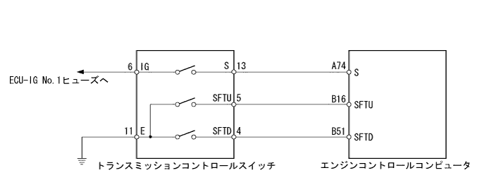
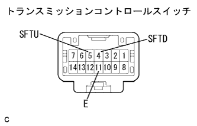
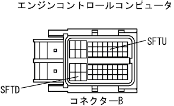
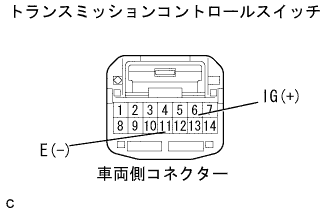
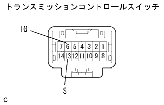
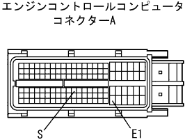

CVT System [Super CVT-i] (K112, K112F) Sport Sequential Shift Switch Circuit |

| Step 1 | Read TaSCAN Data (Sport Mode Select SW) |
Using SST (TaSCAN), display the [ECU Data Monitor] screen according to the screen display, and check the computer data.
| Item Name [Symbol] | Item Description | Condition | Reference Value |
|---|---|---|---|
| Sport Mode Selection SW [SPRT] | Indicates M position | Shift lever D → M | OFF→ON |
|
| ||||
| OK | |
| Step 2 | Read TaSCAN Data (Sport Shift UP SW / Sport Shift DOWN SW) |
Using SST (TaSCAN), display the [ECU Data Monitor] screen according to the screen display, and check the computer data.
| Item Name [Symbol] | Item Description | Condition | Reference Value |
|---|---|---|---|
| Sport Shift UP SW [UPS] | Indicates transmission control switch (+) | Shift lever M → shift to "+" | OFF→ON |
| Sport Shift DOWN SW [DWNS] | Indicates transmission control switch (-) | Shift lever M → shift to "-" | OFF→ON |
|
| ||||
| OK | ||
| ||
| Step 3 | Inspect Shift Lock Control Unit Assembly (Transmission Control Switch) |
 |
Disconnect the transmission control switch connector.
Using SST (Toyota electrical tester), measure the resistance between the connector terminals.
| Tester Connection (Terminal Name) | Condition | Standard |
|---|---|---|
| 5(SFTU) - 11(E) | When shift lever is shifted to "+" | Below 1 Ω |
| 5(SFTU) - 11(E) 4(SFTD) - 11(E) | Shift lever in neutral position (M position) | 10k Ω or higher |
| 4(SFTD) - 11(E) | When shift lever is shifted to "-" | Below 1 Ω |
|
| ||||
| OK | |
| Step 4 | Inspect Wire Harness or Connector (Transmission Control Switch - Engine Control Computer) |
for reference. |
Connect the transmission control switch connector.
Disconnect connector B of the engine control computer and, using SST (Toyota electrical tester), measure the resistance between the vehicle side connector terminals. (For Terminals of ECU, see)
| Tester Connection (Terminal Name) | Condition | Standard |
|---|---|---|
| B16 (SFTU) - Body ground | When shift lever is shifted to "+" | Below 1 Ω |
| B16 (SFTU) - Body ground B51 (SFTD) - Body ground | Shift lever in neutral position (M position) | 10k Ω or higher |
| B51 (SFTD) - Body ground | When shift lever is shifted to "-" | Below 1 Ω |
| Result | Proceed to |
|---|---|
| NG | A |
| OK | B |
|
| ||||
| A | ||
| ||
| Step 5 | Inspect Wire Harness and Connector (Power Source System) |
for reference. |
Disconnect the transmission control switch connector.
Using SST (Toyota electrical tester), measure the voltage between the vehicle side connector terminals.
| Tester Connection (Terminal Name) | Condition | Standard |
|---|---|---|
| 6(IG) - 11(E) | IG ON | 7.5 to 14V |
|
| ||||
| OK | |
| Step 6 | Inspect Shift Lock Control Unit Assembly (Transmission Control Switch) |
 |
Using SST (Toyota electrical tester), measure the resistance between the connector terminals.
| Tester Connection (Terminal Name) | Condition | Standard |
|---|---|---|
| 6(IG) - 13(S) | Shift lever in any position other than M | 10k Ω or higher |
| 6(IG) - 13(S) | Shift lever in M position | Below 1 Ω |
|
| ||||
| OK | |
| Step 7 | Inspect Wire Harness and Connector (Transmission Control Switch - Engine Control Computer) |
for reference. |
Connect the transmission control switch connector.
Disconnect connector A of the engine control computer.
Turn the IG ON and, using SST (Toyota electrical tester), measure the voltage between the vehicle side connector terminals. (For Terminals of ECU, see)
| Tester Connection (Terminal Name) | Condition | Standard |
|---|---|---|
| A74(S) - A104(E1) | Shift lever in any position other than M | 0 to 1.5V |
| A74(S) - A104(E1) | Shift lever in M position | 7.5 to 14V |
|
| ||||
| OK | |
| Step 8 | Replace Engine Control Computer |
Reference| NEXT | |
| Step 9 | TaSCAN (A/T / CVT Learned Value Initialization, G Sensor 0-point Learning and CVT Hydraulic Pressure Learning) |
| Replacement Parts |
|
Using SST (TaSCAN), perform AT/CVT learned value initialization, G sensor 0-point learning and CVT hydraulic pressure learning.
for reference.Check the DTCs again. (see)
| NEXT | ||
| ||